Chapter 6 Measurement
In this chapter we will learn how to use RStudio to assess the construct validity of a measure. We will use scatterplots and correlation coefficient, or r, to evaluate a measure’s reliability and validity.
6.1 RESEARCH QUESTION
Spatial anxiety refers to anxiety about performing spatial tasks like navigation or mentally rotating objects (Lawton, 1994; Ramirez, Gunderson, Levine, & Beilock, 2013). Jing Tian, Su Dam, and Liz Gunderson were interested in how spatial anxiety relates to gender differences in the ability to make number line estimations. They asked approximately 200 elementary school students to complete the Child Spatial Anxiety Questionnaire (CSAQ), which is a measure of spatial anxiety for children. The measure (which can be seen below) consists of 8 items that ask children how nervous they would feel during situations involving spatial tasks. Children responded using five smiley faces displaying emotions ranging from “not nervous at all” to “very, very nervous”.
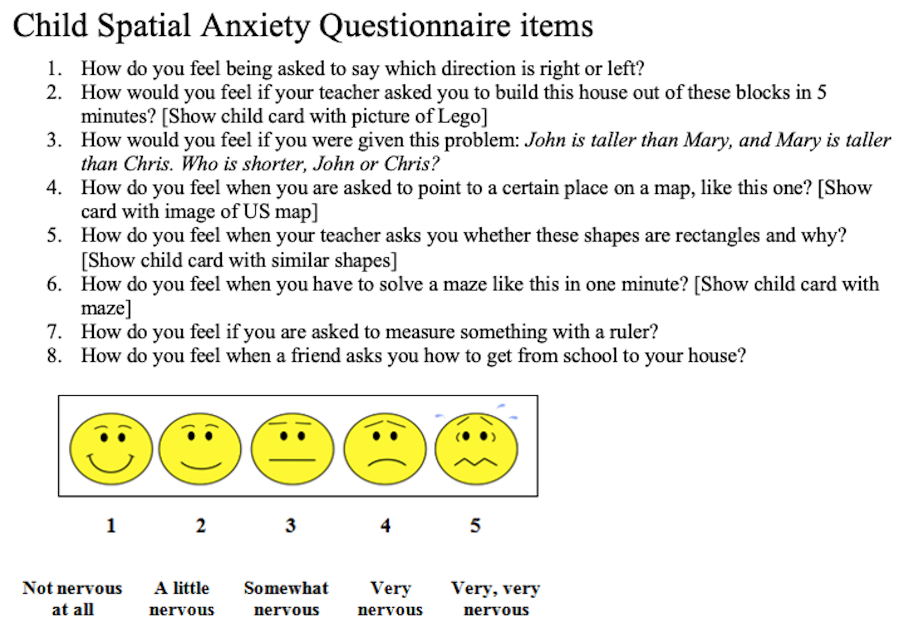
6.2 METHOD
Let’s pretend that you completed a study to test the construct validity of the CSAQ. That is, you wanted to know if the CSAQ is a good measure of children’s spatial anxiety. To do this you contacted the same 200 elementary school students one week after Jing Tian, Su Dam, and Liz Gunderson collected their data, and you collected additional data that will allow you to test whether the CSAQ is reliable (consistent) and valid (accurate).
There are three types of reliability. No additional data collection is needed to test the internal reliability of the CSAQ, or the consistency of responses within the survey. Test-retest reliability refers to the consistency of a measure over time. In order to assess whether the CSAQ is consistently measuring children’s spatial anxiety over time, you gave the children the CSAQ again. Interrater reliability refers to the consistency of observations. As you are interested in establishing the construct validity of a self-report measure, this is not relevant here.
There are three empirical ways to assess validity. Criterion validity refers to whether a measure is related to relevant behavioral outcomes. To test the criterion validity of the CSAQ you measured a behavioral indicator of spatial anxiety by recording the children’s heart rate during a 15 minute geography lesson. Convergent validity refers to whether a measure is related to similar measures. To test this, you gave the children a different measure of spatial anxiety. You adapted Lawton’s (1994) Spatial Anxiety Scale to be appropriate for children. Discriminant validity refers to whether a measure is not related to dissimilar measures. You gave the children a measure of general anxiety, the short form of the State - Trait Anxiety Inventory, in order to establish that the CSAQ discriminates between general anxiety and anxiety about spatial abilities.
6.3 DATA ANALYSIS OVERVIEW
The data can be found in the file csaqp.csv. Each row is a different participant in the study.
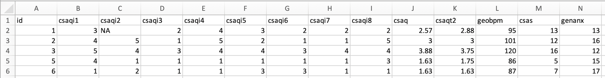
- The first column contains arbitrary ID numbers to identify the participants.
- The next 8 columns contain the children’s responses to each item of the CSAQ. (note this is real data).
- The csaq column contains the children’s time 1 CSAQ scores. Jing Tian, Su Dam, and Liz Gunderson calculated each child’s CSAQ score by computing an average score of the eight items. Scores could range from 1 to 5, with higher scores indicating higher levels of spatial anxiety. (note this is real data.)
- The csaqt2 column is the children’s CSAQ scores when they took the measure the second time one week later.
- The fourth column is the students’ heart rate, the average beats per minute (BPM), during the 15 minute geography lesson.
- The next column is the children’s scores on the child version of the Spatial Anxiety Scale (CSAS). This scale consists of 5 items that are rated on a 5-point scale. The sum scores can range between 5 to 20. High scores indicate high levels of spatial anxiety
- The last column is the children’s scores on the short form of the State - Trait Anxiety Inventory (Marteau & Bekker, 1992). These scores are the sum of 6 statements that are rated on a 4-point scale, with higher scores signifying more general anxiety.
Once the data is opened in RStudio, we will first calculate internal reliability statistics. Cronbach’s alpha is the traditional measure psychologists use to assess whether a measurement scale has internal reliability. Cronbach’s alpha is similar to the average correlation of the correlations between each item of the scale, or the average inter-item correlation (AIC). For example, for a 3-item scale the AIC is the average of the correlations between item 1 and 2, item 1 and 3, and item 2 and 3. Ideally AICs should be between .15 to .50 (Clark & Watson, 2019). Anything less than .15 would suggest that the items are not related to each other. Anything over .50 would suggest that the items are redundant.
Cronbach’s alpha mathematically combines the AIC and the numbers of items in a scale. The closer a Cronbach’s alpha is to 1, the better a scale’s internal reliability (because the correlations between the scale items are higher). Cronbach’s alphas of over .70 are considered acceptable in psychology.
McDonald’s omega is an “up and coming” measure of internal reliability. It is becoming an increasingly popular alternative to Cronbach’s alpha because it takes the hierarchical structure of the data into account (i.e., that the items in a scale are probably not independent from one another). McDonald’s omegas over .70 are considered acceptable (Dunn, Baguley, & Brunseden, 2013).
Next assess the test-retest reliability with scatterplots and correlation statistics. Positive and strong (r ≥ .50) correlations between the time 1 and time 2 scores establish good test-retest reliability.
Scatterplots and correlation statistics are also used to assess criterion, convergent, and discriminant validity. However, there are not cut-offs and benchmarks that indicate good validity. Instead the scatterplots and correlation statistics are used to establish that the pattern of how a measure is related to other measures makes sense. For example, Children who report high levels of spatial anxiety on the CSAQ should have high heart rates during the geography lesson, while those who report low levels of spatial anxiety should have low heart rates during the lesson. Moreover, a positive association between CSAQ scores and the other measure of spatial anxiety (the CSAS) would indicate convergent validity. Finally, a zero association between the CSAQ scores and general anxiety scores would establish discriminant validity.
6.4 OPEN DATA
First assign the dataset to an object called csaqpilot (or whatever you prefer). You can do this with the point and click method by selecting from the environment menu:
IMPORT DATASET -> FROM TEXT (READR)
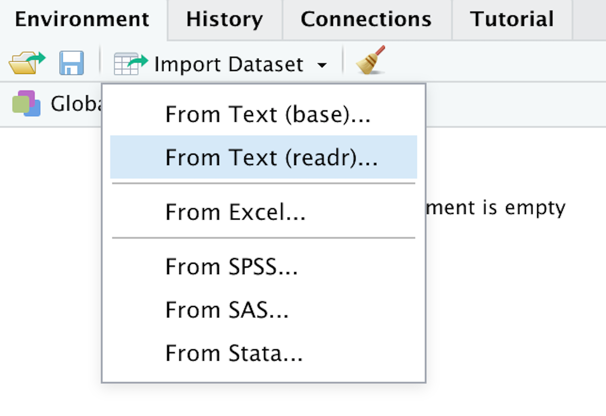 If you use this method - remember to change the object name to csaqpilot in the preview box if you want to match my work.
Or you could use the following code:
library(readr)
csaqpilot <- read_csv("csaqp.csv")
Then load the tidyverse and psych packages (if they are not loaded already):
library(tidyverse)
library(psych)
6.5 INTERNAL RELIABILITY
Measure the internal reliability of the CSAQ with Cronbach’s alpha and McDonald’s omega.
6.5.1 Cronbach’s Alpha
In order to calculate Cronbach’s alpha in R you have to create a new object with only the items of the measurement scale. Do this with the select function of the tidyverse package:
csaq <- csaqpilot %>%
select(csaqi1, csaqi2, csaqi3, csaqi4, csaqi5, csaqi6, csaqi7, csaqi8)
- This command tells R to select the variables listed in the select function from the csaqpilot object and save it as csaq.
After the command is run, a new object called csaq will appear in your environment.
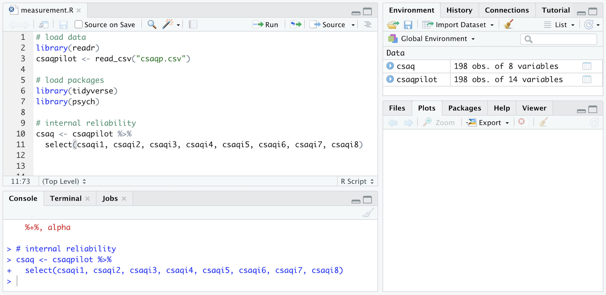
Then use the alpha function of the psych package to compute the Cronbach’s alpha of the 8 items of the CSAQ by putting the csaq subset in the parentheses of the alpha function like this:
alpha(csaq)
Other packages in R also have functions called alpha (for example the Hmisc and tidyverse package both have alpha functions). When multiple packages with alpha functions are loaded, R can get confused about which alpha function to use. This can be avoided by telling R which package to use. To do this put the package name before the command followed by two colons like this:
psych::alpha(csaq)
Here is the output of the alpha command:
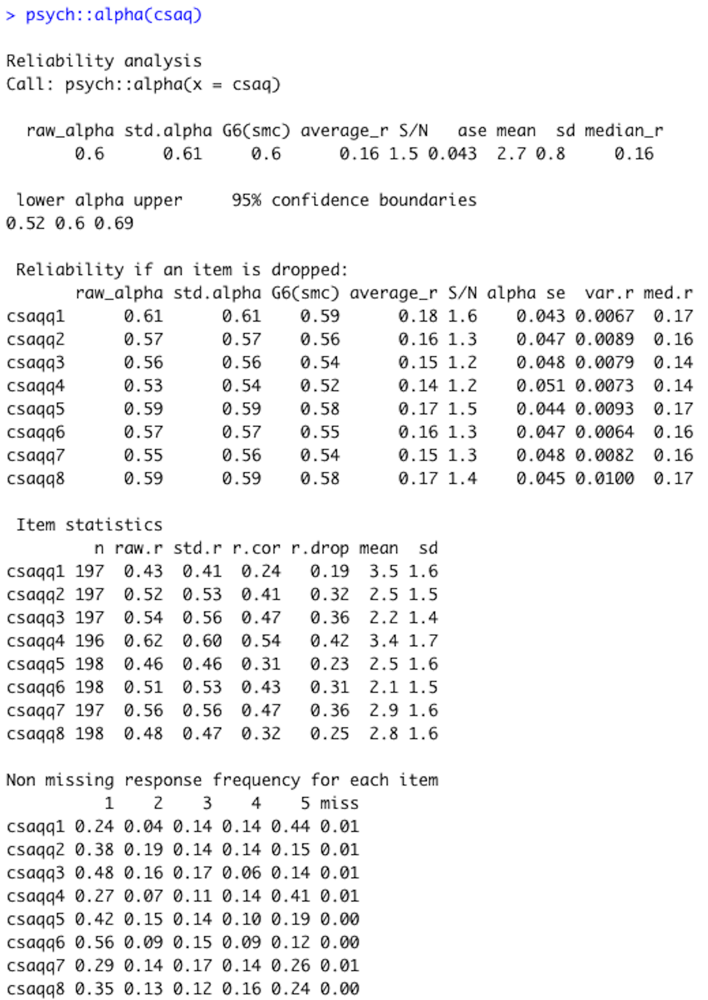
Cronbach’s alpha is reported under the raw alpha. The Cronbach’s alpha of the CSAQ is .60. The next line reports the 95% confidence interval, which is .52 to .69.
While the Cronbach’s alpha of the CSAQ is below the .70 cut off that many researchers consider a benchmark for good internal reliability, Cronbach’s alphas with young kids tend to be lower. Internal reliabilities below 0.70 are quite common when studying elementary school-age children.
The average_r reports the AIC. In this example the AIC is .16, which is within the acceptable range of .15 to .50.
The mean and sd report the respective statistics for the scale if the items are averaged for each participant, which is how the CSAQ is scored. If a scale uses a sum score instead of an average, the numbers reported here would not be the correct mean and sd.
The purpose of the ‘Reliability if an item is dropped’ table is to get a sense of what Cronbach’s alpha would be without an item. When Cronbach’s alphas are lower than acceptable, researchers have to revise and reconsider items. Each row of this table reports the Cronbach’s alpha statistics if an item was deleted. For example, the first row reports the Cronbach’s alpha statistics if the first items of the CSAQ (i.e., “How do you feel being asked to say which direction is right or left?”) was dropped. If this item was dropped, the Cronbach’s alpha would be .61.
The ‘Item statistics’ table shows how each item of a scale is related to the rest of the scale. The raw.r column reports the correlation between the item and the total score with that item still in it. The r.drop column reports the correlation between the item and the total score without the item. The mean and sd report the means and standard deviations of the scale if that item is dropped.
The last table summarizes the proportions of the responses for each item. The CSAQ is on a 5-point scale, so here we can see the proportion of responses that were 1, 2, 3, 4, 5, or missing. For the first item most children selected 5 (44%) and very few children selected 2 (4%). This table is useful for checking the distribution of responses. There should be variability in participants’ responses. The scale would not be meaningful if everyone is giving the same response.
6.5.2 Mcdonald’s Omega
The psych package has an omega function, but a package called GPArotation must be installed in order to use it. This package only needs to be installed; you do not need to load it. So, if you have not done so already, first install the package with the following code: (Remember that you only have to install a package once.)
install.packages("GPArotation")
To compute McDonald’s omega of the 8 items of the CSAQ put the csaq subset in the parentheses of the omega function, followed by nfactors = 1. The nfactors = 1 tells R that you think that the items are all measuring the same thing (spatial anxiety). It means “the number of factors equals one”. Here is what the command should look like:
psych::omega(csaq, nfactors = 1)
The output of the omega function is long and pulls on advanced statistics, so I suggest focusing on the first table and not worrying about the rest for now.
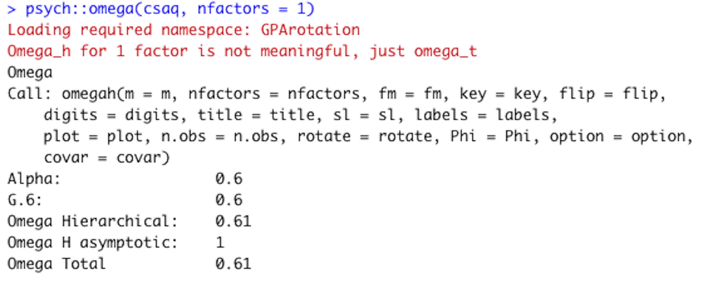 McDonald’s omega can be found in the last row of the first table, next to Omega Total. The McDonald’s omega of the CSAQ scale is .61. Note that this omega function also computes Cronbach’s alpha (see the first row of the table).
6.5.3 TEST-RETEST RELIABILITY
We will use scatterplots and correlation coefficients to assess the test-retest reliability of the CSAQ.
Let’s first create a scatterplot of the relation between the students’ scores the first time they took the CSAQ and the second time they took it (i.e., the csaq and csaqt2 variables). The command using ggplots of the tidyverse package looks like:
csaqpilot %>%
ggplotaes(x=csaq, y=csaqt2)) +
geom_point()
- csaqpilot tells R to use the data in the csaqpilot object
- The variables (csaq and t2cmaq) are listed in the aesthetics
- geom_point tells R that you want a scatterplot
Here is the graph:
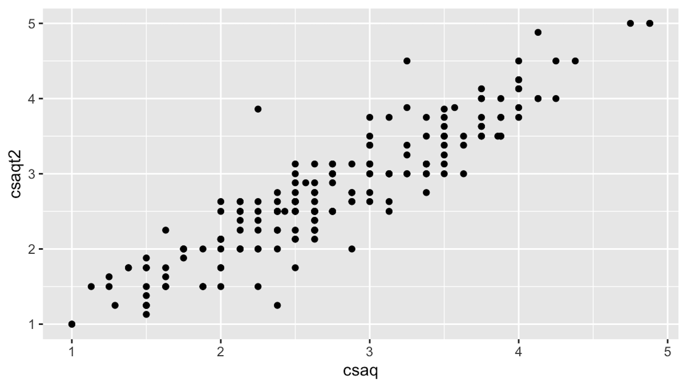
Each data point in the graph is a child. The scatterplot shows that the children who reported that they felt anxious about spatial tasks the first time also reported being anxious the second time. That is, it looks like there is a strong positive correlation.
Let’s next calculate a correlation between the time 1 and 2 spatial anxiety scores. We will use the corr.test function to calculate the correlation and its associated statistics. The corr.test function is part of the psych package and the organization of the code below uses tidyverse. Here is the basic command:
DataObject %>%
select(Variable1Name, Variable2Name) %>%
corr.test() %>%
print(short=FALSE)
- Replace DataObject with the name of the object that is storing the data.
- Replace Variable1Name with the name of one of the variables.
- Replace Variable2Name with the name of the other variable.
Here is the command in the current example:
csaqpilot %>%
select(csaq, csaqt2) %>%
corr.test() %>%
print(short=FALSE)
- The csaqpilot tells R to use the data in the csaqpilot object
- The select(csaq, csaqt2)tells R to select the variables that we want to include in the correlation matrix. Without this, every variable in the csaqpilot dataset would be included in the correlation matrix.
- The short = FALSE in the print parentheses prints the confidence intervals
- Use ?corr.test for more options
Here are the results:
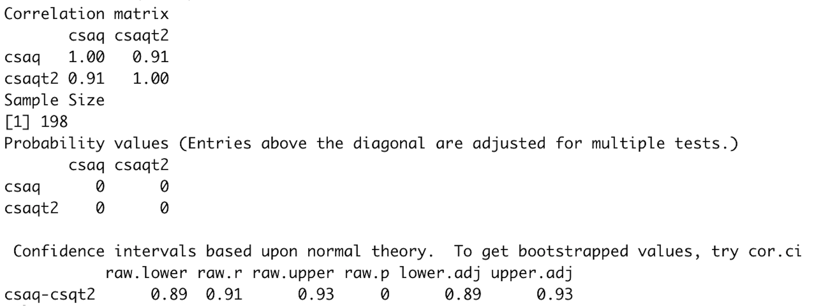
The first table of the output is the correlation matrix. Each cell in the correlation matrix shows the correlation between two variables. The variable names appear at the top of the columns and the rows. The line of 1.00s is called the diagonal and is the correlation of each variable with itself. The coefficients above and below the diagonal are redundant. The correlation between csaq and csaqt2 is .91. (test-retest reliability with children is rarely this high, outing my fake data).
The next table shows the probability associated with the correlation coefficients listed in the first table. These probabilities are the p-values from null hypothesis significance testing (NHST). NHST estimates the likelihood of getting results as extreme or more extreme given the null is true (i.e., given there is really no association between the variables). If this likelihood is sufficiently small (less than 5%), than we reject the null hypothesis and conclude that the association is more extreme than zero.
The table reports that the p-values associated with the correlation between csaq and csaqt2 is 0. This means that it is less than .001 (the default is for R to report 0 if the number is sufficiently small to save space - but we know that 0 is never an option in NHST because the tails of the distribution are asymptotic).
The last table shows the confidence intervals. The confidence interval provides an interval estimate of a parameter. Here the parameter is the true correlation between two observations. This range fairly often contains the true association (population level) between the variables.
In the present example, the correlation coefficient between the time 1 and 2 CSAQ scores (r = 0.91) is a point estimate of the true association between the variables. The confidence interval gives us an interval estimate of this association and it can be found in the first row, that begins with csaq-csqt2. The raw.lower reports the lower bound of the confidence interval, .89. The raw.upper reports the upper bound of the confidence interval, .93.
6.6 CRITERION, CONVERGENT, AND DISCRIMINANT VALIDITY
Scatterplots and correlation statistics are also used to establish criterion, convergent, and discriminant validity.
Use ggplot to create the scatterplots. Here is the command to create the scatterplot of the participants’ CSAQ scores and their average heart rate during the geography lesson (i.e., the csaq and geobpm variables):
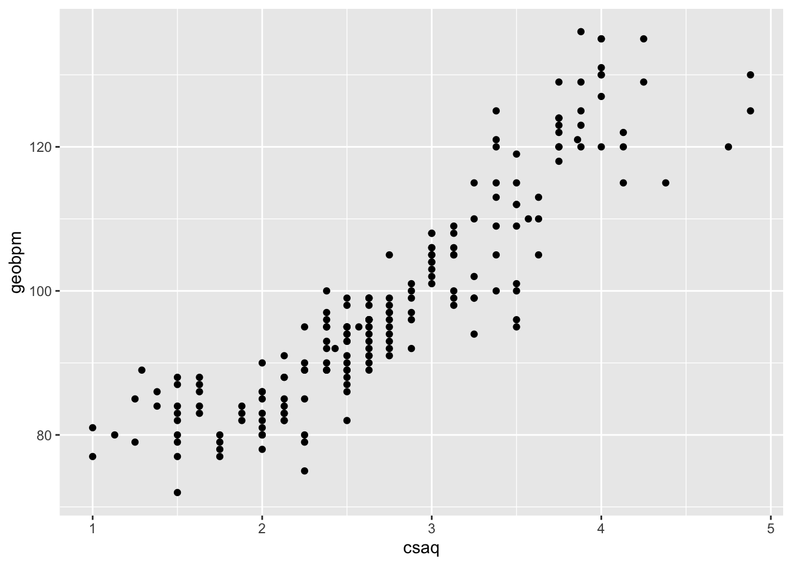
This plot shows that CSAQ scores are strongly (and positively) correlated to heart rate during a geography lesson. The children with high CSAQ scores had higher heart rates, while those with lower CSAQ scores had lower hear rates.
Next use the following command to create the scatterplot of the participants’ CSAQ and CSAS scores:
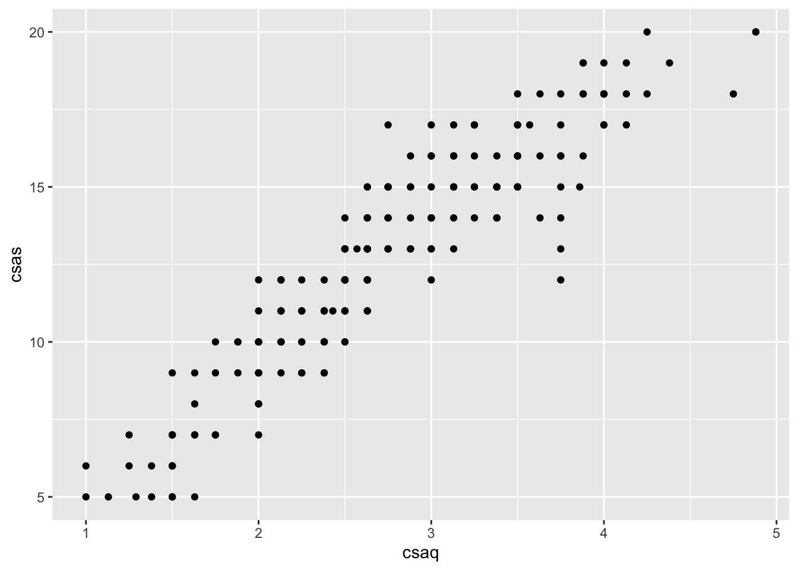
The figure shows a positive relation between the CSAQ and CSAS scores. Children who reported high spatial anxiety on the CSAQ also reported high spatial anxiety on the CSAS, and vice-versa.
Finally, here is the command to create the scatterplot of the participants’ CSAQ and general anxiety scores:
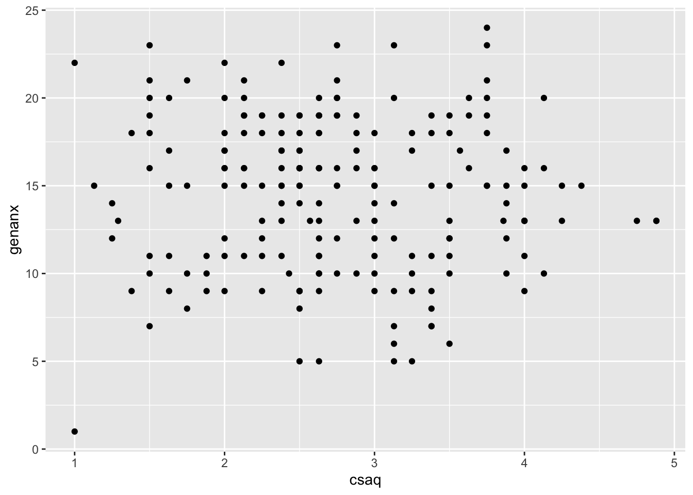
The graph shows a zero association between CSAQ scores and general anxiety scores. Some of the children who reported high levels of spatial anxiety also reported high levels of general anxiety while others reported low levels of general anxiety. Similarly, some of the children who reported low levels of spatial anxiety reported high levels of general anxiety while others reported low levels. There is no clear pattern.
Next calculate correlation statistics for the relation between the CSAQ scores, the geography lesson heart rate, the CSAS scores, and the general anxiety scores.
Here is the command to create the correlation matrix:
## Call:corr.test(x = .)
## Correlation matrix
## csaq geobpm csas genanx
## csaq 1.00 0.90 0.92 -0.04
## geobpm 0.90 1.00 0.81 0.04
## csas 0.92 0.81 1.00 -0.06
## genanx -0.04 0.04 -0.06 1.00
## Sample Size
## [1] 198
## Probability values (Entries above the diagonal are adjusted for multiple tests.)
## csaq geobpm csas genanx
## csaq 0.00 0.00 0.00 1
## geobpm 0.00 0.00 0.00 1
## csas 0.00 0.00 0.00 1
## genanx 0.55 0.58 0.39 0
##
## Confidence intervals based upon normal theory. To get bootstrapped values, try cor.ci
## raw.lower raw.r raw.upper raw.p lower.adj upper.adj
## csaq-gebpm 0.87 0.90 0.93 0.00 0.86 0.93
## csaq-csas 0.90 0.92 0.94 0.00 0.89 0.95
## csaq-gennx -0.18 -0.04 0.10 0.55 -0.20 0.12
## gebpm-csas 0.75 0.81 0.85 0.00 0.74 0.86
## gebpm-gennx -0.10 0.04 0.18 0.58 -0.10 0.18
## csas-gennx -0.20 -0.06 0.08 0.39 -0.23 0.11A correlation matrix with more than two variables is interpreted in the same way as those with two variables. Each cell contains correlation statistics between the variable listed at the top of the column and the beginning of the row.
In this example, we are interested in the correlations between the children CSAQ scores and the geography lesson heart rate, the CSAS scores, and the general anxiety scores. So, focus on the csaq column. The correlation between the csaq and geobpm variables is .90. The correlation between the csaq and csas variables is .92. Finally, the correlation between the csaq and genanx variables is -.04.
The next table shows the probabilities associated with the correlation coefficients listed in the first table. Again, focus on the csaq column. The results show that the p-values associated with the correlations between the csaq and geobpm variables and the csaq and csas variables are 0, which means that they are less than .001 - so these associations are statistically significant. The probability value associated with correlation between the csaq and genanx variables is .55, which is above the .05 cutoff for statistical significance.
The last table shows the confidence intervals. Here the statistics for each correlation are listed in each row. The first column shows the variable names – sometimes R drops the vowels in the names here to save space). In this example the first row reports statistics for the relationship between the csaq and geobpm variables. The lower bound of the confidence interval is .87 (under the raw.lower) and the upper bound is .93 (under raw.upper). The second row reports the confidence interval for the correlation between the csaq and csas variables, which is .90 to .94. The third row reports the confidence interval for the correlation between the csaq and genanx variables, which is -0.18 to .10. Note that this confidence interval includes zero, which is consistent with NHST because both are saying that zero is a likely correlation between the variables.
6.7 APA-STYLE WRITE-UP
Spatial anxiety was measured with the Child Spatial Anxiety Questionnaire (CSAQ). Items ask children how nervous they would feel during situations involving spatial tasks (e.g., “How do you feel being asked to say which direction is right or left?”). Children responded using five smiley faces displaying emotions ranging from “not nervous at all” to “very, very nervous” (1–5 scale). Internal reliability was moderate (Cronbach’s alpha (⍺) = .60, 95% CI = .52 to .69; McDonald’s Omega (⍵) = .61). The children were administered the CSAQ two times – 1 week apart. Test-retest reliability was high (r = .91, p < .001, 95% CI = .89 to .93).
The validity of the CSAQ was also considered. CSAQ scores were positively related to children’s heart rate during a geography lesson (r = .90, p < .001, 95% CI = .87 to .93), establishing criterion validity of the CSAQ. CSAQ scores were positively related to another measure of spatial anxiety, the CSAS (r = .92, p < .001, 95% CI = .90 to .94), establishing convergent validity. Moreover, the CSAQ scores were not related to general anxiety scores (r = -.04, p = . 55, CI.95 = -0.18 to .10), establishing discriminant validity.